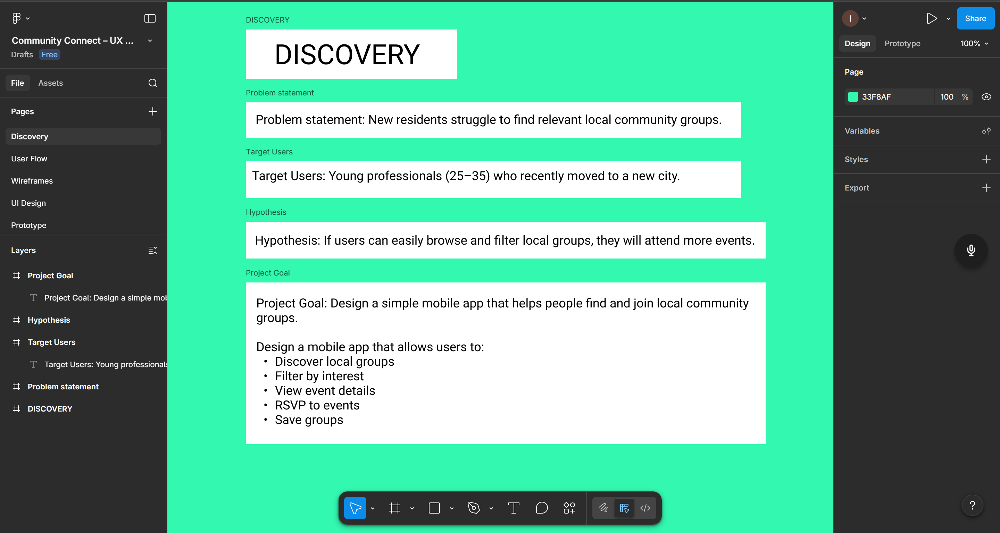
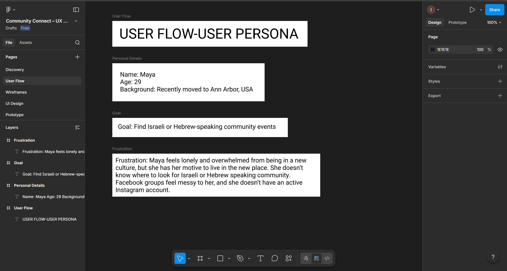
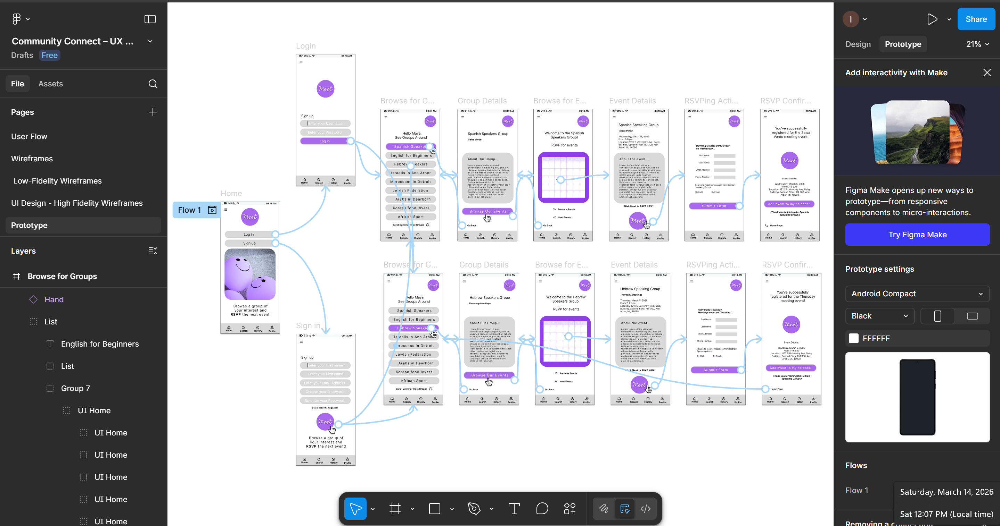

Step 1: Discovery
This step is not about visuals at all, but thinking.

This step is not about visuals at all, but thinking.

Meet Maya, a 29-year-old woman who recently moved to Ann Arbor, Michigan, to live alone. Maya is looking to meet people, but doesn't know where to look. See how the Meet app helps Maya meet people with similar interests.
See a simple, positive, and happy diagram.
 See Low Fidelity Wireframes
See Low Fidelity Wireframes
